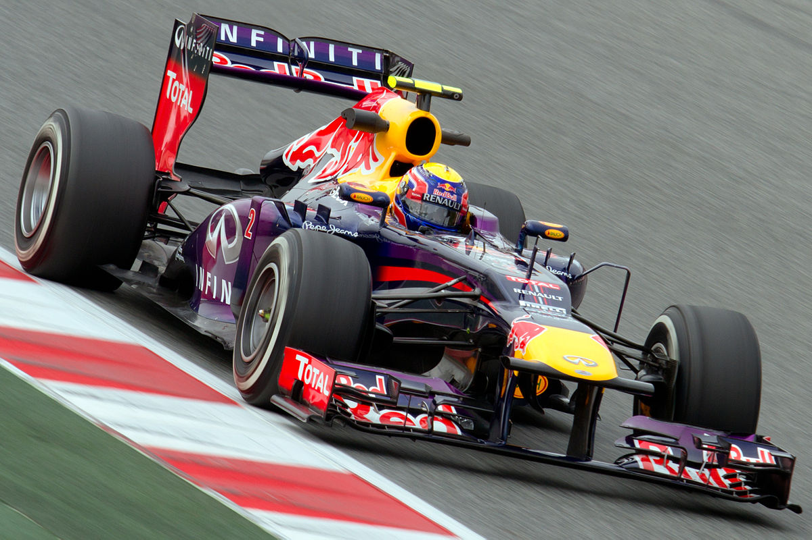
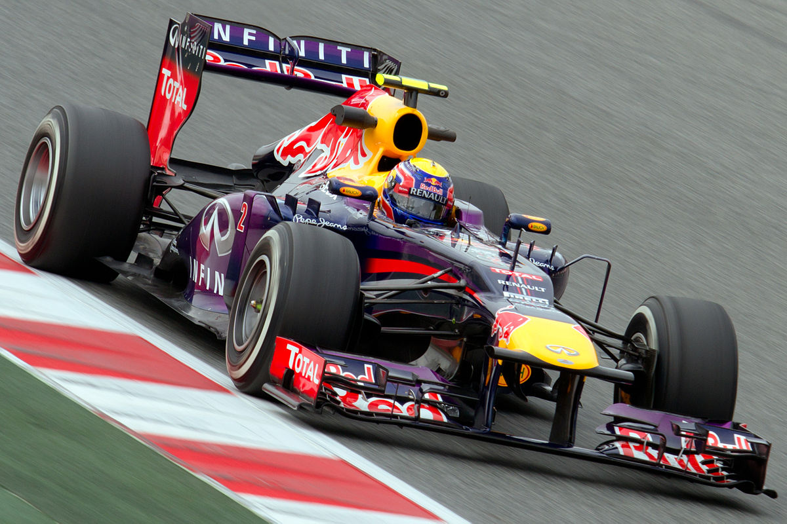
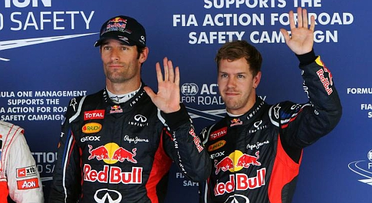
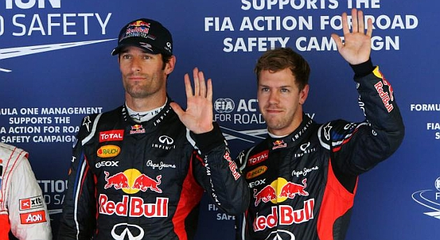
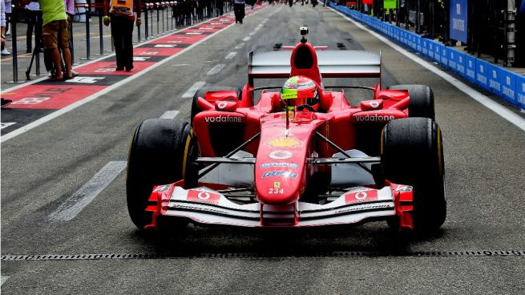
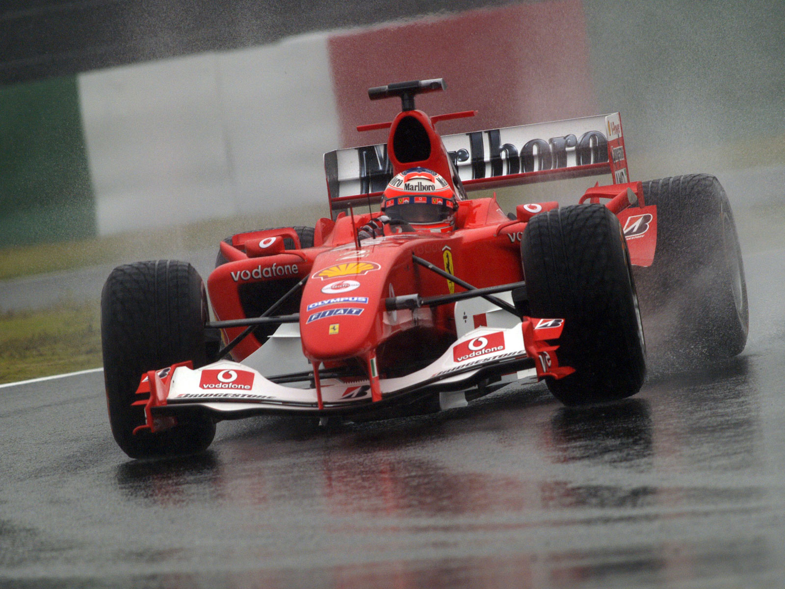
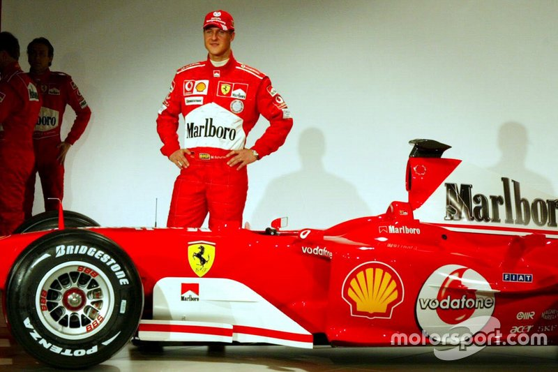
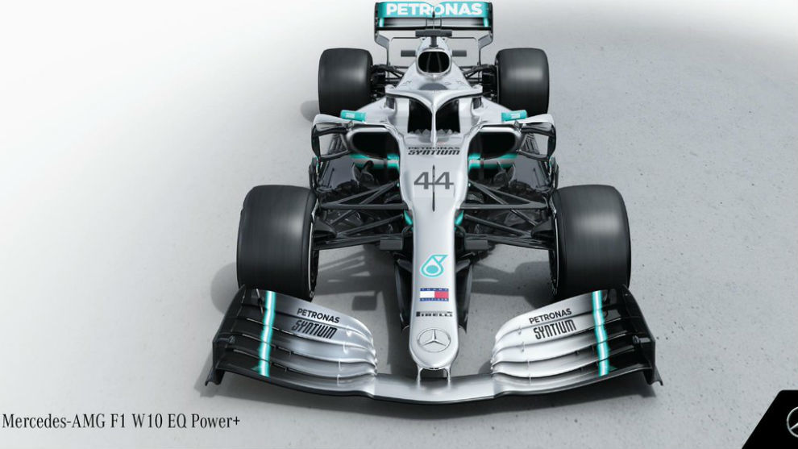
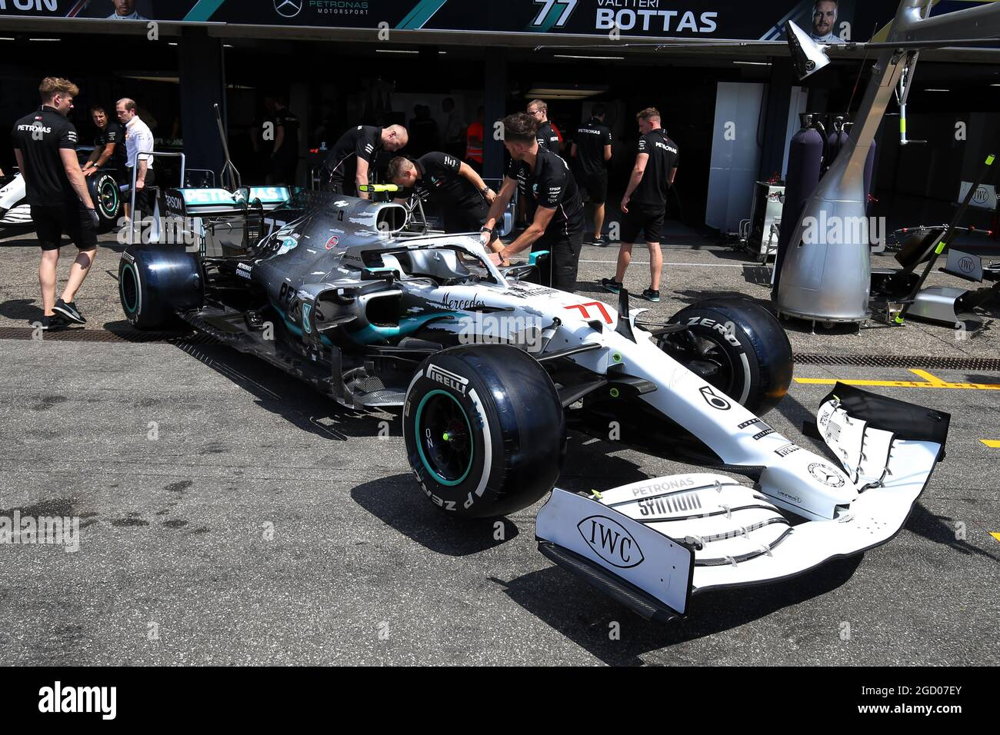
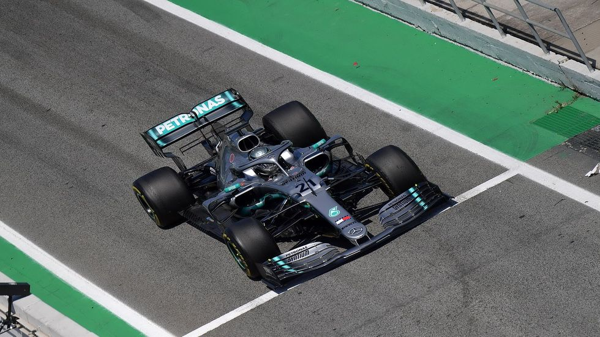

Red Bull RB9
 

 

El Red Bull RB9 es un coche de Fórmula 1 diseñado por Adrian Newey para el equipo Infiniti Red Bull Racing. El coche compitió durante la temporada 2013 de Fórmula 1, siendo sus pilotos oficiales Sebastian Vettel y Mark Webber.
Ferrari F2004



El Ferrari F2004 fue un monoplaza con el que la Scuderia Ferrari compitió en la temporada 2004 de Fórmula 1. Fue diseñado por Rory Byrne, Ross Brawn y Aldo Costa, logrando el campeonato de constructores y pilotos.
Mercedes W10




El Mercedes AMG F1 W10 EQ Power+ es un monoplaza diseñado por Mercedes-AMG Petronas Motorsport para competir en la temporada 2019 de Fórmula 1. Fue conducido por Lewis Hamilton y Valtteri Bottas.